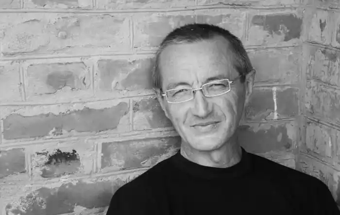
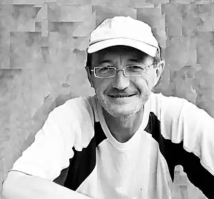

Костянтин Москалець (Кость Вілійович Москалець)
Поет, прозаїк, літературний критик, музикант.
Народився 23 лютого 1963 року у селі Матіївка біля Батурина на Чернігівщині. Заочно закінчив Літературний інститут ім. М. Горького в Москві (поезія, семінар Едуарда Балашова). Один із засновників бахмацької літературної групи ДАК. Служив у війську, працював на радіозаводі в Чернігові, був учасником Львівського театру-студії "Не журись!", виступаючи як автор-виконавець власних пісень. Автор слів і музики відомої в Україні пісні "Вона" ("Завтра прийде до кімнати..."). Член Національної спілки письменників України (1992) та Асоціації українських письменників (1997). Від 1991 р. живе в селі Матіївці у власноруч збудованій Келії Чайної Троянди, займаючись виключно літературною працею. Костянтин Москалець – автор поетичних книг "Думи" (К.: Молодь, 1989) та "Songe du vieil pelerin" ("Пісня старого пілігрима") (К., 1994), "Нічні пастухи буття" (Львів: Кальварія, 2001) та "Символ троянди" (Львів: Кальварія, 2001), книг прози "Рання осінь" (Львів: Класика, 2000), "Досвід коронації" (Львів: ЛА "Піраміда", 2009), філософської і літературної есеїстики "Людина на крижині" (К.: Критика, 1999) і "Гра триває" (К.: Факт, 2006), а також книги щоденникових записів "Келія чайної троянди" (Львів: Кальварія, 2001). У 2000 році Віктор Морозов записав диск пісень Москальця "Треба встати і вийти", а в 2008 — "Армія Світла". Проза Костянтина Москальця перекладена англійською, німецькою та японською мовами; сербською і польською перекладені численні вірші та есе. Лауреат премій ім. О. Білецького (2000), ім. В. Стуса (2004), ім. В. Свідзінського (2004), ім. М. Коцюбинського (2005), ім. Г. Сковороди "Сад божественних пісень" (2006), "Глодоський скарб" (2010).